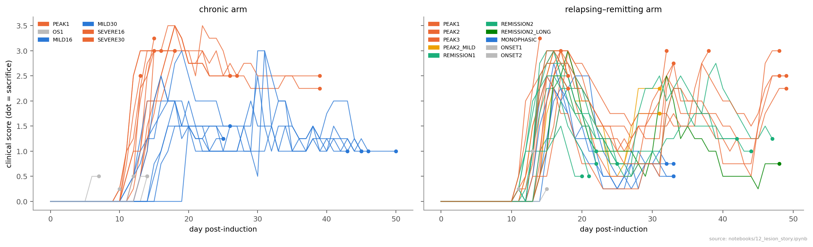
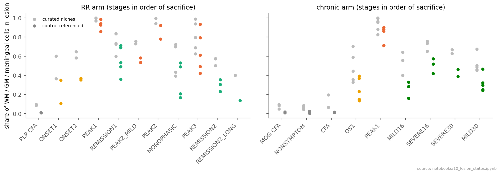
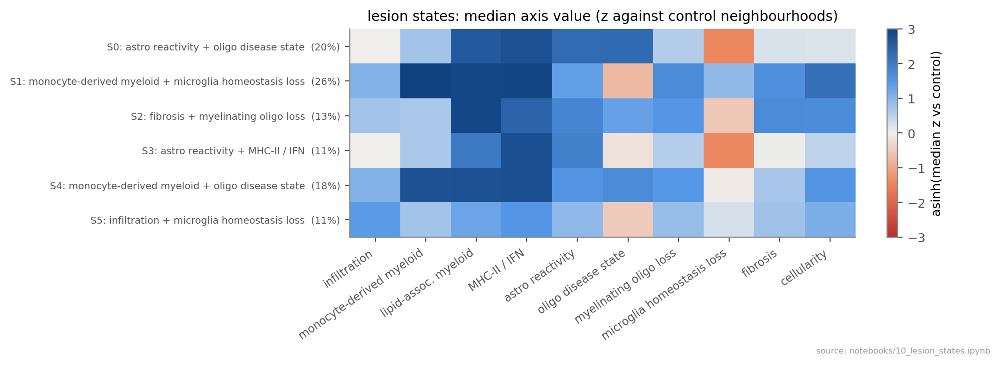
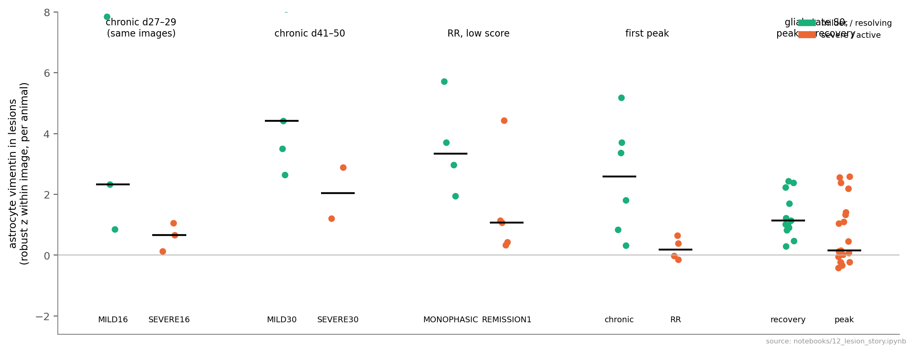
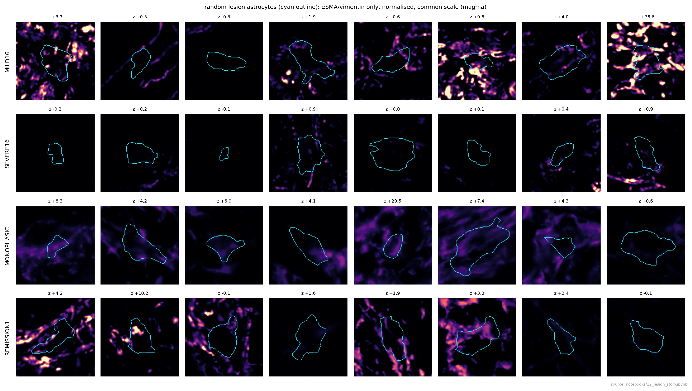
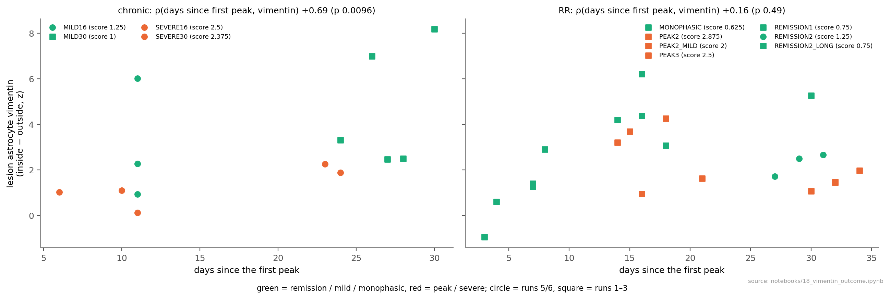
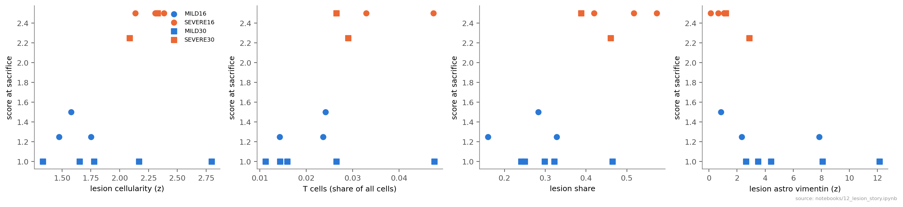
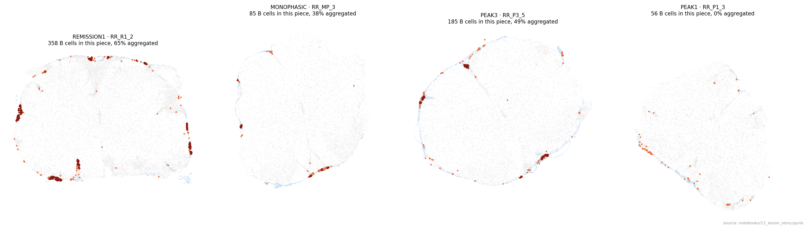
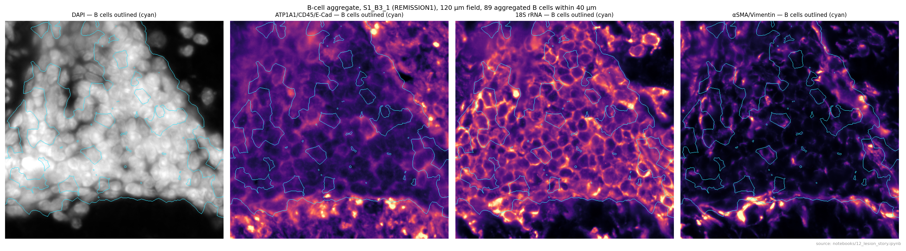
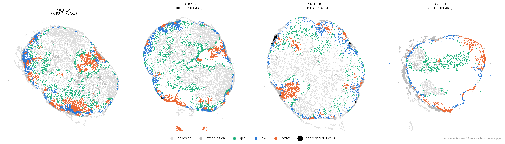

How EAE lesions form, resolve or persist, and what the segmentation stains add
Lesions run from an active infiltrate to a fibrotic, demyelinated state and largely resolve. Severe chronic animals keep active lesions, and relapse-prone animals accumulate meningeal B-cell aggregates. In the images, lesion astrocyte vimentin is low at peak and tends to be higher in animals that do well, but it is not a measurable barrier to immune cells.
- Lesions redefined against control tissue: never-immunised animals ~1 % lesion (curated labels 4–20 %); lesion share falls from 0.93 at the first peak to 0.14 in long remission.
- Six lesion states: active monocyte-derived (S1, S4) at every peak; fibrotic / myelin-loss (S2) and glial-reactive (S0, S3) later.
- Vimentin (not on the RNA panel; only the stain measures it) fills lesion interiors. Its link to a better outcome is weak to moderate (ρ ≈ −0.45 after adjusting for time, ≈ −0.33 once signal shared with vascular smooth muscle in the same channel is removed). It is robust to run, lesion state and RNA reactivity, but entangled with overall disease burden. It does not hold back immune cells at lesion edges.
- Chronic severity is set at the first attack and means lesions that stayed active, not more neuropil loss.
- Relapse can't be predicted clinically; B cells accumulate after the first attack (fewer in never-relapsing animals); relapses are mostly new lesions.
- Earlier image findings replicate in runs 1–3 (neuropil loss, astrocyte RNA-before-protein, image models on unseen runs). An earlier "T cells face vessels" result was withdrawn as an imaging artefact.

1The disease courses and the questions
Question What distinguishes animals that recover from those that stay severe, and those that relapse from those that don't?
Data Daily clinical scores and weights from d0 to sacrifice for all 67 animals. Per animal: onset day, first-attack peak (maximum within 10 days of onset), lowest score afterwards, area under the score curve, maximum weight loss.
Found Chronic severity is set at the first attack: all SEVERE animals peaked at 3.5 and never fell below 2.25; MILD animals peaked at 1.5–2.5 and partly recovered. Relapse is not predictable clinically: never-relapsing (MONOPHASIC) first peaks 2.25–2.75 vs relapsers 2.5–3.0, with similar onset, weight loss and early recovery. So the tissue is where to look.
2What counts as a lesion?
Question The curated niche labels call 4–20 % of never-immunised control tissue "lesion". Can we define lesions so that controls are ~0 %, and then follow lesion burden through the disease?
How Each cell's 30 nearest cells (same tissue piece) are described by their cell-type mix (23 types incl. reactive astrocytes, disease-associated oligodendrocytes, macrophages, T and B cells), seven gene programs (lipid-associated myeloid, MHC-II, interferon, astrocyte reactivity, homeostatic microglia, myelin, fibrosis) and cellularity. Within each region (white matter, grey matter, meninges) a neighbourhood is called lesion when it lies outside the range of control animals. The threshold is set so held-out control animals come out ~1 % lesion.
Found Controls 0.3–2.4 % lesion (both control types alike); 72 % of cells labelled "Lesion_mix" look like control tissue. Lesions resolve: RR lesion share 0.93 at the first peak → 0.53 REMISSION1 → 0.35 MONOPHASIC → 0.30 REMISSION2 → 0.14 long remission; chronic PEAK1 0.87, SEVERE16 0.52 vs MILD16 0.28.


3Lesion states and how they change
Question Are lesions all the same, or do they pass through distinct states as disease progresses and resolves?
How Lesion neighbourhoods were clustered on ten interpretable axes (infiltration, monocyte-derived myeloid, lipid-associated myeloid, MHC-II/interferon, astrocyte reactivity, oligodendrocyte disease state, myelinating-oligodendrocyte loss, microglia homeostasis loss, fibrosis, cellularity) into six states, named by what distinguishes them.
Found S1 and S4 are active, monocyte-derived lesions (S1 ~35 % of tissue at every peak, ~0 in long remission). S2 is the late fibrotic, demyelinated lesion (SEVERE30 20 %, MILD30 13 %, REMISSION2 12 %). S0/S3 are glial-reactive tissue that persists after the peak; S5 is lymphocytic infiltrate. The course runs active → fibrotic and glial-reactive.

4Vimentin in lesion astrocytes
Question Vim is not on the 5K panel, so the αSMA/vimentin stain is the only per-cell vimentin readout. In reactive astrocytes vimentin marks a scar-forming state. Does it differ between animals that do well and those that don't?
How Vimentin in astrocytes inside lesions, as a robust z-score within each Xenium image (so animals are only compared with cells stained and imaged with them). Five independent contrasts: chronic MILD vs SEVERE (two cohorts), MONOPHASIC vs REMISSION1, chronic vs RR at the first peak, and the same lesion state at peak vs in recovery.
Found The milder or recovering group has the higher median in every contrast: MILD16 vs SEVERE16 2.3 vs 0.7 (same images), MILD30 vs SEVERE30 4.4 vs 2.0, MONOPHASIC vs REMISSION1 3.3 vs 1.1, chronic vs RR peak 2.6 vs 0.2, glial state peak → recovery 0.16 → 1.14.


4a · Is it technical, or αSMA?
How Every alternative got a test: comparing lesion with non-lesion astrocytes of the same animal (cancels piece brightness); the same contrast in DAPI, 18S and ATP1A1; astrocytes far from vessels and with no smooth-muscle, endothelial or fibroblast cell within 20 µm; deep white matter only; reactive astrocytes only; within each lesion state; neurons and oligodendrocytes as negative controls; vascular smooth muscle αSMA as a calibrator; image sharpness; smooth-muscle and fibroblast transcripts inside the astrocytes.
Found The direction holds in all four contrasts under every test. Controls stay near zero, and there is no sign of αSMA-cell contamination. One caveat: the vascular calibrator is also higher in the milder group for MILD16 vs SEVERE16 and chronic vs RR, so part of those two raw differences may be channel brightness. The within-animal contrast removes it; chronic vs RR is the weakest contrast.

4b · Where in the lesion?
How Lesion regions with real outlines (smoothed lesion-cell density on a 10 µm grid; 356 regions). Vimentin against distance to the region edge.
Found Vimentin rises on entering a lesion and stays high through the interior; there is no ring at the edge. Inside minus outside, per animal: PEAK1 0.60; MILD16 2.27 vs SEVERE16 1.01; MILD30 3.30 vs SEVERE30 2.07; MONOPHASIC 4.28 vs REMISSION1 1.26. Correction: an earlier "edge ring" came from a cell-based edge distance, where "just inside" meant isolated lesion cells in healthy tissue. It is withdrawn.

4c · How strong is the link with outcome?
How 35 post-peak animals: vimentin (inside − outside) against the clinical score at sacrifice, adjusting for days since the first peak, first-attack height, arm, run, lesion share and RNA astrocyte reactivity; leaving one run out; within each lesion state; and, most strictly, pairs of animals imaged together.
Found ρ −0.34 (p = 0.046), −0.44 after adjusting for time (p = 0.008). Stable when each run is left out (−0.42 to −0.55) and within lesion states (S0 −0.49, S2 −0.56, S1 −0.45, S4 −0.41). Beyond RNA: astrocyte RNA reactivity rises slightly with worse scores, vimentin protein falls; adjusted for RNA reactivity, vimentin vs score is ρ −0.63 (p < 0.001). But adjusting for lesion share or first-attack height weakens it (−0.26 / −0.29), and in the strict same-image test the worse animal has less vimentin in 12 of 19 pairs (p = 0.36). An apparent failure to replicate in runs 1–3 came from no score variance there (all MILD30 animals score 1.0).
Strength: weak to moderate. Consistent direction, robust to run, time, lesion state and RNA, but entangled with overall disease burden and only weakly supported within images. Part of it is shared by the whole αSMA/vimentin channel: vascular smooth muscle cells are also dimmer in sicker animals (ρ −0.36) and track the animal's astrocyte signal (ρ +0.56). That could be staining/brightness or vascular biology. The astrocyte-specific remainder is ρ ≈ −0.33 (p ≈ 0.03–0.06). Post-Xenium immunofluorescence with separate vimentin and αSMA antibodies on the same sections would settle it.

5Is vimentin a barrier to immune cells?
Question A collaborator's hypothesis: a successful astrocyte scar is good for recovery because it restricts immune infiltration. If so, lesions or stretches of lesion edge with more vimentin should have fewer immune cells escaping into the tissue around them.
How Three tests, from coarse to sharp. (1) Across lesions of the same animal: border vimentin vs infiltrating immune cells (T, B, NK/DC, DC, macrophages, neutrophils) just outside, relative to the animal's distant tissue. (2) Along the edge of the same lesion: each edge cut into 100 µm stretches (3,188 stretches, 392 lesions, 53 animals), compared within the lesion so age, size, activity, animal and image cancel, adjusted for the immune load inside. (3) In relapse animals: do vimentin-rich old lesions have less new active inflammation next to them?
Found No test shows a barrier. (1) Across lesions: median ρ 0.00 (p = 0.65). (2) Along edges: ρ +0.035 (95 % CI −0.016 to +0.073; a barrier would be negative). Vimentin-rich stretches have more immune cells just inside and the same outside. (3) Old lesions: ρ −0.02. Correction: a first analysis with cell-linkage lesion objects suggested the opposite; its objects were diffuse scatters without real outlines, and it is withdrawn.
Answer at this resolution: vimentin behaves as a marker of the resolution phase, not as a measurable physical barrier. What remains possible: a barrier acting earlier than our time points, on cells we didn't count (e.g. microglia), or below ~100 µm. Scar components we didn't stain (GFAP protein, CSPGs) could also be involved.


6Why are some chronic animals severe?
Question Severe animals all had a bigger first attack. At day 27–41, does their tissue show more ongoing inflammation, or more irreversible loss (neurons, myelinating oligodendrocytes, neuropil)?
How MILD16 vs SEVERE16 (same days, same run, same images) and MILD30 vs SEVERE30 (different runs, support only). Across all 13 chronic-late animals: score against lesion share, active states, T cells, cellularity, cell loss and the stains.
Found Severe animals still carry more lesion (0.52 vs 0.28; 0.42 vs 0.30) with more active monocyte-derived states, T cells and dense infiltrate, and fewer myelinating oligodendrocytes in white matter (0.08 vs 0.15 per white-matter cell). Surrounding neuropil is not lost more. Score correlates with lesion share (ρ 0.58), T cells (0.47) and cellularity (0.38), and with low lesion vimentin (−0.80). That last one is partly a run artefact, because MILD30 is the only run-1 group (section 4c).
Reading: the severe course is lesions that stayed active, more than irreversible tissue loss. Groups of 2–5 animals.

7Relapse: B cells, and new vs reactivated lesions
Question Since the clinical course doesn't predict relapse, does the tissue? And are relapses new lesions or old ones flaring up?
How B cells per 1000 cells, the share in aggregates (≥ 5 B cells among a B cell's 15 nearest cells) and in the meninges, along the RR course. For relapses: how close active tissue (S1/S4) sits to old fibrotic tissue (S2), compared with the first attack and with a permutation null; how many separate lesions there are; and how much active tissue lies in lesions that also contain old tissue.
Found B cells accumulate after the first attack (PEAK1 14 → REMISSION1 22 → PEAK2_MILD 25 per 1000), increasingly in aggregates (0.26 → 0.55) and in the meninges. Never-relapsing animals have fewer than REMISSION1 animals (9 vs 22, p = 0.03) and recovered further after the first attack. The chronic arm has ≤ 8 throughout. Relapses are mostly new lesions: active tissue touches old fibrotic tissue more than at the first attack (0.23 vs 0.05 of active cells within 50 µm, p = 4 × 10⁻⁴), but relapse animals have more separate lesions (17 vs 8) and only 19 % of active relapse tissue is in lesions that also contain old tissue. B-cell aggregates at relapse sit near old lesions.
Strength: cross-sectional, 4–5 animals per group; REMISSION1 animals' future is unknown. Candidate picture: relapse-prone animals build meningeal B-cell aggregates.



8Chronic vs relapsing–remitting at the same peak
How PEAK1 in both arms (d13–18, score ~3). The arms differ in antigen, likely mouse strain, and run, so this is descriptive.
Found RR first-peak lesions are more monocyte-derived with oligodendrocyte damage (S4 0.26 vs 0.17 of tissue, p = 0.01) and less lipid-laden. RR animals have more B cells (14 vs 3 per 1000) and lose more weight (22 vs 14 %).
9Damage memory
Question Do lesions that persist into recovery look like peak lesions in the stains?
How The same lesion state compared between peak (19 animals) and recovery (13 animals): neuropil (ATP1A1 around each cell) and vimentin.
Found Neuropil trends back toward normal (active S1 0.79 → 1.03) while vimentin rises (glial-state tissue vimentin p = 0.009/0.005; best q = 0.13). Persisting lesions look repaired in neuropil and scarred in vimentin, but this is a trend, not a firm result.
10Do the earlier image findings replicate in runs 1–3?
| Finding (runs 5/6) | Runs 1–3 |
|---|---|
| White-matter neuropil loss in lesions | replicated and stress-tested: ×0.72 (58 pieces, p < 10⁻⁴) vs ×0.79; robust to crowding, composition and the tissue surface (notebook 20) |
| Astrocyte reactive RNA before vimentin protein | replicated: ρ 0.51–0.58 per run; RNA-only astrocytes more common in active disease |
| T cells orient 18S-rich cytoplasm towards vessels | withdrawn: the measure replicates, but a brightness-matched control shows it is bleed from bright neighbours plus outline geometry (notebook 19) |
| Image-only models on an unseen run | yes, every run: lesion AUROC 0.85–0.91, cell type 0.42–0.47 (chance 0.07) |
| 18S texture as a severity marker | partly: astrocytes, myeloid, oligodendrocytes only |
Caveats
- Small groups (2–19 animals) and a cross-sectional design: "builds", "precedes" and "resolves" are inferred from animals taken at different times.
- The arms differ in antigen, likely strain, and run. MILD30 is run 1 only. MONOPHASIC and REMISSION1 never share an image.
- Lesion calls and states come from the transcriptome; the image readouts are independent of them.
- αSMA and vimentin share one channel. Tests find no αSMA contribution in astrocytes, but separate antibodies would settle it.
- Two earlier claims were withdrawn after checking (the vimentin edge ring; immune cells around better-bordered lesions). Both came from a lesion-object definition that didn't match the tissue.
Next
- Validate vimentin (and GFAP) with separate antibodies at matched days: MILD vs SEVERE, MONOPHASIC vs relapsing.
- Follow B-cell aggregates and relapse risk with more REMISSION1-stage animals.
- Time-resolved or interventional tests of astrocyte reactivity and lesion resolution.